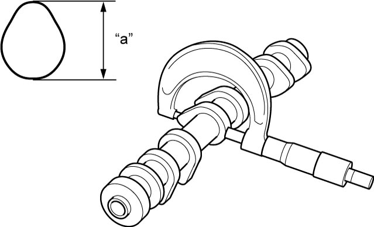
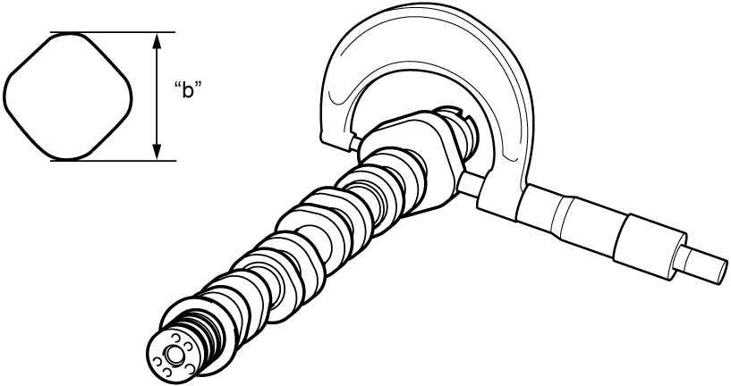
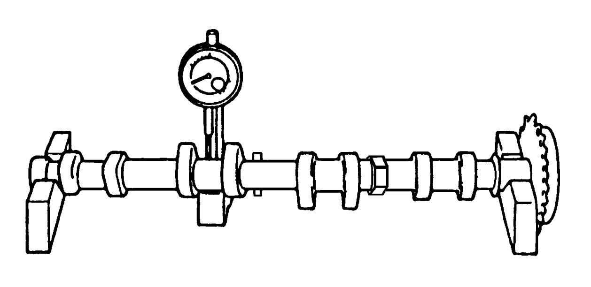
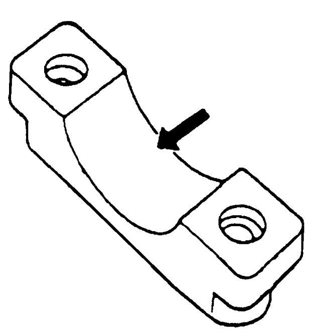
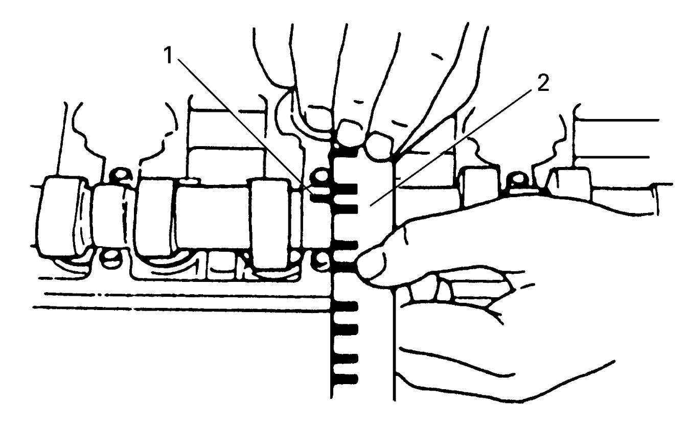
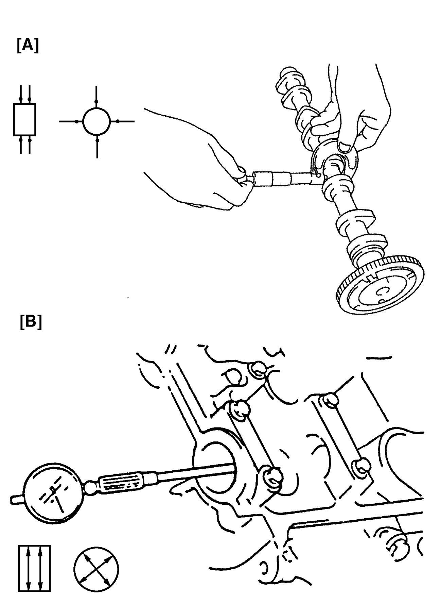
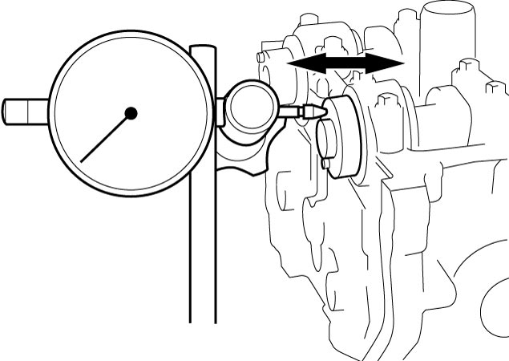
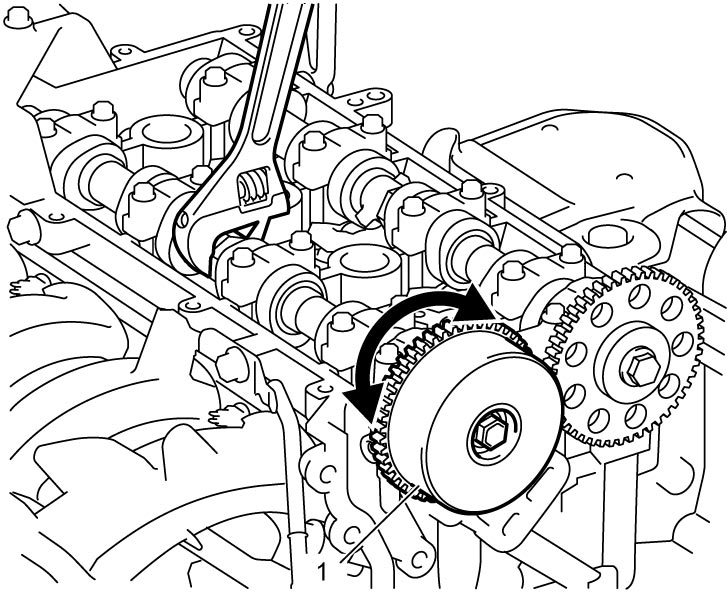
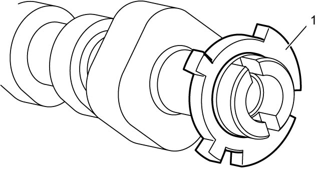

1D
| Camshaft and VVT Actuator Inspection |
Cam Wear
Using a micrometer, measure cam height “a”. If measured height is below its limit, replace camshaft.

 "Expand image")

 "Expand image")
Cam height of camshaft
| Cam height | Standard | Limit |
|---|---|---|
| Intake cam “a” | 37.995 – 38.155 mm (1.4958 – 1.5021 in.) |
37.895 mm (1.4919 in.) |
| Exhaust cam “a” | 38.066 – 38.226 mm (1.4986 – 1.5049 in.) |
37.966 mm (1.4949 in.) |
| High pressure fuel pump cam “b” | 52.920 – 53.080 mm (2.0834 – 2.0897 in.) |
52.820 mm (2.0795 in.) |
Camshaft Runout
Set camshaft between two “V” blocks and measure its runout using a dial gauge.
If measured runout exceeds limit, replace camshaft.
Camshaft runout
Limit: 0.015 mm (0.0006 in.)

 "Expand image")
Camshaft Journal Wear
Check camshaft journals and camshaft housings for pitting, scratches, wear or damage.
If any defect is found, replace camshaft and/or cylinder head with camshaft housings as assembly.

 "Expand image")
Check clearance using gauging plastic according to the following procedure.
1)Clean camshaft housings and camshaft journals.
2)Install camshafts to cylinder head.
3)Place a piece of gauging plastic to full width of camshaft journal parallel to camshaft.
4)Without applying engine oil and sealant, install camshaft housings referring to Step 1) – 10) in “installation” under Camshaft Removal and Installation:K14C.
5)Remove housings, and using scale (2) on gauging plastic envelope, measure gauging plastic (1) width at the widest point.
 If measured camshaft journal clearance exceeds limit, measure camshaft journal diameter and camshaft journal housing bore diameter. Replace camshaft or cylinder head assembly whichever the difference from specification is greater.
If measured camshaft journal clearance exceeds limit, measure camshaft journal diameter and camshaft journal housing bore diameter. Replace camshaft or cylinder head assembly whichever the difference from specification is greater.
Camshaft journal clearance
| Item | Standard | Limit |
|---|---|---|
| Intake side No.1 housing | 0.030 – 0.060 mm (0.0011 – 0.023 in.) |
0.08 mm (0.0031 in.) |
| Others | 0.051 – 0.087 mm (0.0020 – 0.0034 in.) |
0.10 mm (0.0039 in.) |

 "Expand image")
Camshaft journal diameter [A]
| Item | Standard |
|---|---|
| Camshaft front upper housing intake side and exhaust side | 29.006 – 29.021 mm (1.1419 – 1.1425 in.) |
| Others | 22.934 – 22.955 mm (0.9029 – 0.9037 in.) |
Camshaft housing bore diameter [B]
| Item | Standard |
|---|---|
| Camshaft front upper housing intake side and exhaust side | 29.051 – 29.066 mm (1.1437 – 1.1443 in.) |
| Others | 23.006 – 23.021 mm (0.9057 – 0.9063 in.) |

 "Expand image")
6)Install intake and exhaust camshafts, and then measure intake and exhaust camshaft housing thrust clearance using a dial gauge.
If measured clearance exceeds limit, replace camshaft and/or cylinder head with camshaft housings as assembly.
If measured clearance exceeds limit, replace camshaft and/or cylinder head with camshaft housings as assembly.
Camshaft housing thrust clearance
Standard: 0.10 – 0.35 mm (0.0039 – 0.0137 in.)
Limit: 0.50 mm (0.020 in.)

 "Expand image")
VVT Actuator
•Check VVT actuator for wear or damage.
Replace VVT actuator if any defect is found.
•Hold intake camshaft using spanner or adjustable wrench with VVT actuator (1) fitted and check that VVT actuator cannot be turned by hand.
Replace VVT actuator if it is turned by hand.
Replace VVT actuator if any defect is found.
•Hold intake camshaft using spanner or adjustable wrench with VVT actuator (1) fitted and check that VVT actuator cannot be turned by hand.
Replace VVT actuator if it is turned by hand.

 "Expand image")
Signal Rotor
Check signal rotor (1) for crack and damage.
If any defect is found, replace intake camshaft.

 "Expand image")